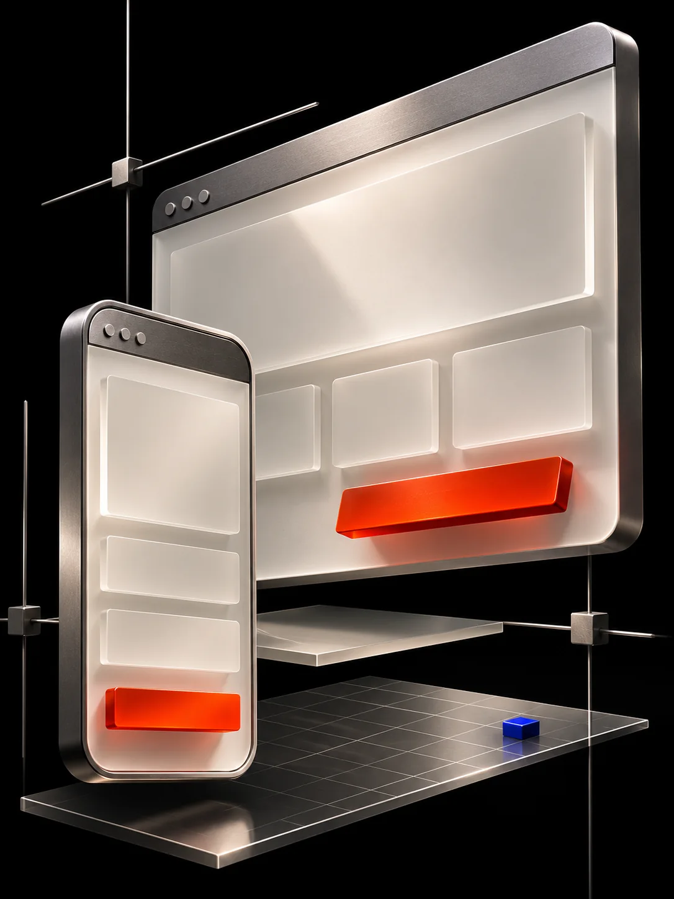
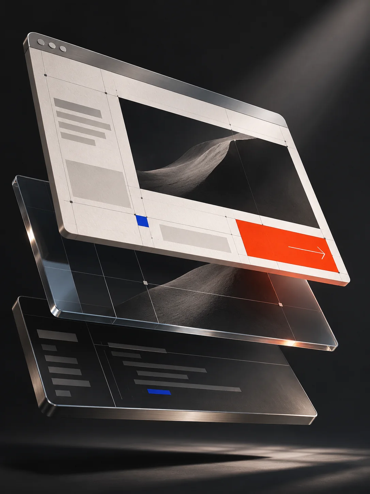
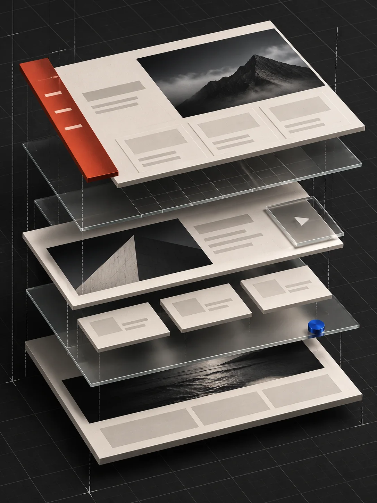
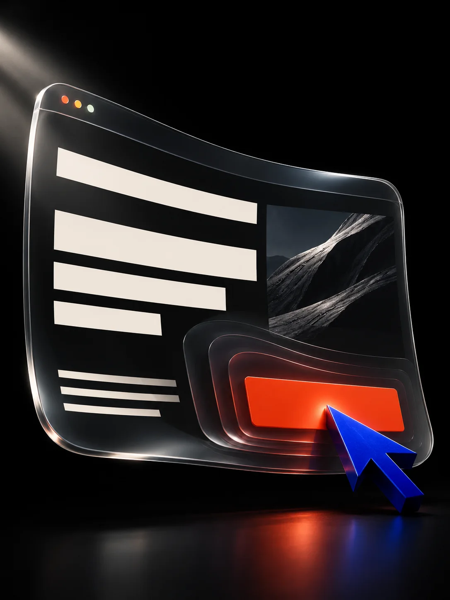
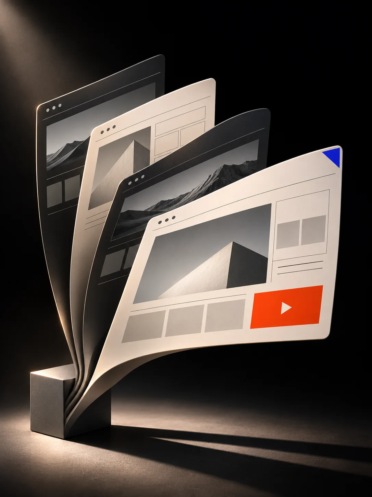
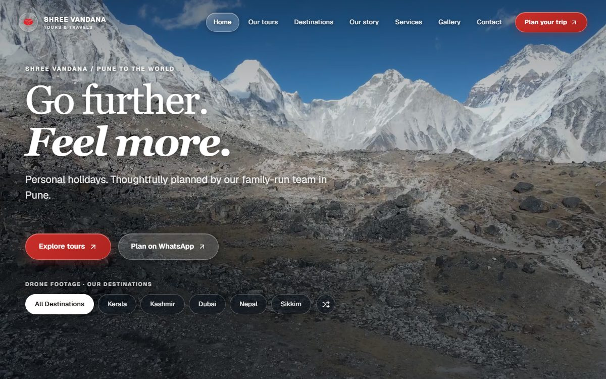
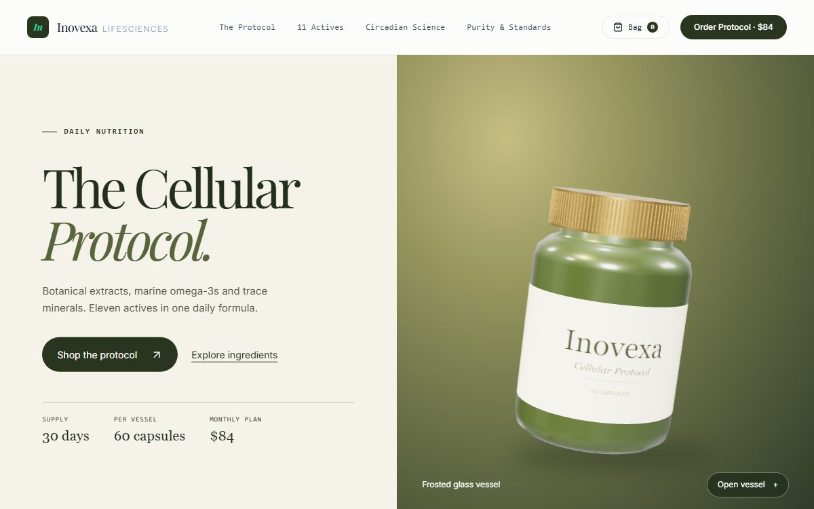
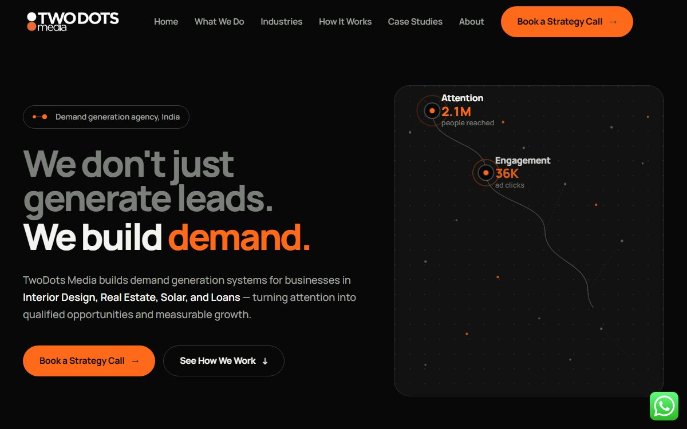
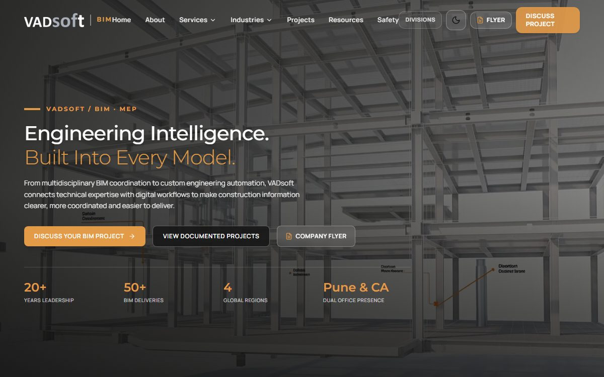
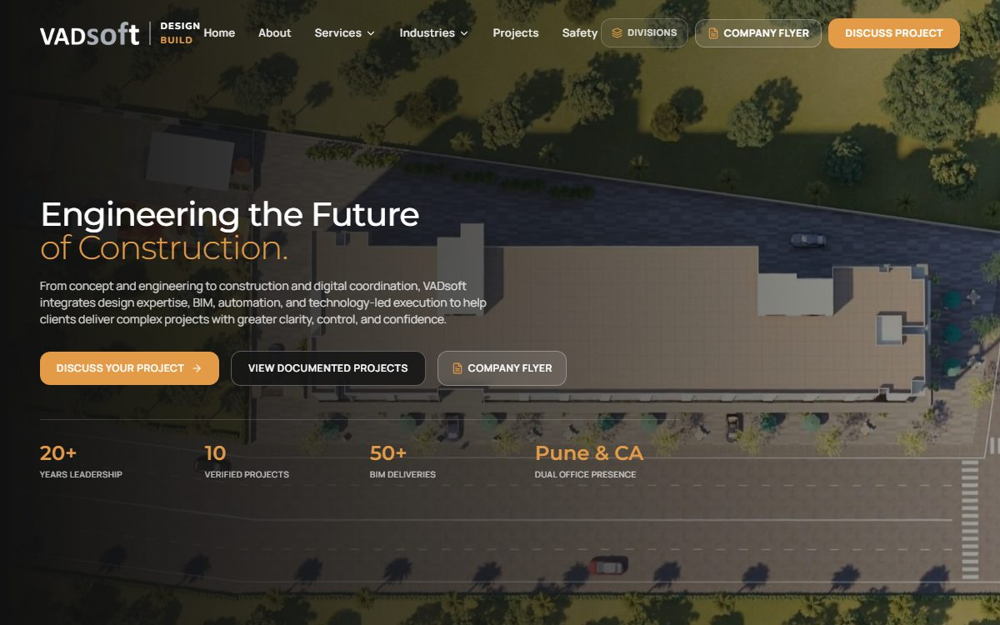

OUT
THERE





WE BUILD WEBSITES FIRST.
Good looking is the start.Good business is the point.
Based in India · 10:30:00 IST
Taking on select builds
We’ll make it happen.
A website should make your business easier to understand and harder to ignore. We get the strategy, design, code, and search working together. Then we make it look effortless.

Travel, made easier to say yes to.VIEW PROJECT ↗
One product. A clearer path to purchase.VIEW PROJECT ↗
Demand generation, explained with confidence.VIEW PROJECT ↗
Technical depth, without the detour.VIEW PROJECT ↗
A build offering you can understand at a glance.VIEW PROJECT ↗& PIPELINESAI · PDF · Video
VANDANA TRAVELS — TRAVEL · LIVE
OUT THERE
The details do the heavy lifting. Motion, depth, and a little restraint make a website feel like it belongs to its brand.
Five moves,
zero theatre
A clear plan, early prototypes, and direct conversations with the people building your site. You see it take shape as we go.
CUT THE NOISE
We get close to the business, the audience, and the goal. Then we define what the site needs to do.
- Product & audience audit
- Search intent mapping
- Clear scope
SET THE ANGLE
We set the story, the structure, and the visual direction so every screen has a reason to exist.
- Information architecture
- Visual territory
- Motion direction
DESIGN IN MOTION
Type, layout, motion, and interaction come together early. You can feel the direction before launch.
- Responsive UI system
- Interactive prototype
- Micro-interactions
BUILD & LAUNCH
We build for speed, accessibility, and search from the start, then check the details across devices.
- Production engineering
- Technical SEO setup
- Cross-device QA
AUTOMATE
When the work calls for it, we connect the systems behind the site: AI video, PDFs, and creative workflows.
- AI video workflows
- Dynamic PDF templates
- Creative editing
Two people.
Zero middlemen.
Design and engineering work alongside search and growth. You work directly with the two people shaping the project.
Design & engineering
Interfaces · Motion · Real-time 3D
SEO & distribution
Search architecture · Organic growth
Systems & pipelines
AI video · Dynamic PDFs · Workflows
Pick your
entry point
A clear scope. Direct access. Work that earns its place on the page.
Site + SEO
A custom website people can find, understand, and use. Built to make a strong first impression and a useful next step.
- Custom UI & responsive build
- Technical & on-page SEO
- Performance tuning
- Clean launch handover
Full studio build
For the website that has to carry the brand: strategy, design, motion, engineering, and search in one build.
- Complete design & front-end
- Custom motion & WebGL
- Search growth architecture
- Post-launch iteration
Creative & AI systems
Automated AI video runs, dynamic PDF generators, and post-production pipelines.
- AI video generation pipelines
- Automated PDF templates
- Image & video editing
- Custom workflow automation
Before you
write in
The useful answers, up front.
IWhat kind of websites do you build?
Custom sites for service businesses, product brands, and teams with a complicated story to tell. We shape the design around the audience, the business goal, and the action a visitor should take.
IIWho actually does the work?
The two founders. The people planning, designing, developing, and refining your site are the people in the conversation. Your feedback reaches the build directly.
IIIWhat happens before launch?
We work through the story and structure, build the responsive site, then check accessibility, performance, and technical SEO. Scope and handover are clear before launch.
IVCan you build the unusual parts too?
Yes. Motion and 3D when they help the story; automation, AI video, and dynamic PDFs when the work behind the site calls for them.
LET’S MAKE
IT REAL.
Websites first. Ideas welcome. Tell us what you’re building; we’ll get straight to the good part.
One message is enough.
Tell us the idea. You’ll hear from the people who would build it.
Start the conversation ↗Direct to the founders · No forms